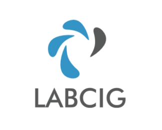

Home
Equipe
Downloads
Contato
Apostila Topografia I
Apostila Topografia II
Aula de controle de recalque e flecha
Roteiro de instalação do Teodolito
Leituras de ângulo no teodolito
Conceitos básicos sobre GPS
Manual Rápido Estação Total Zeiss Elta R 2
Manual do Teodolito Digital Eth 45 Zeiss
Manual Rápido Planímetro Digital Haff
Manual Rápido Nível a Laser
Processamento dos dados de GPS